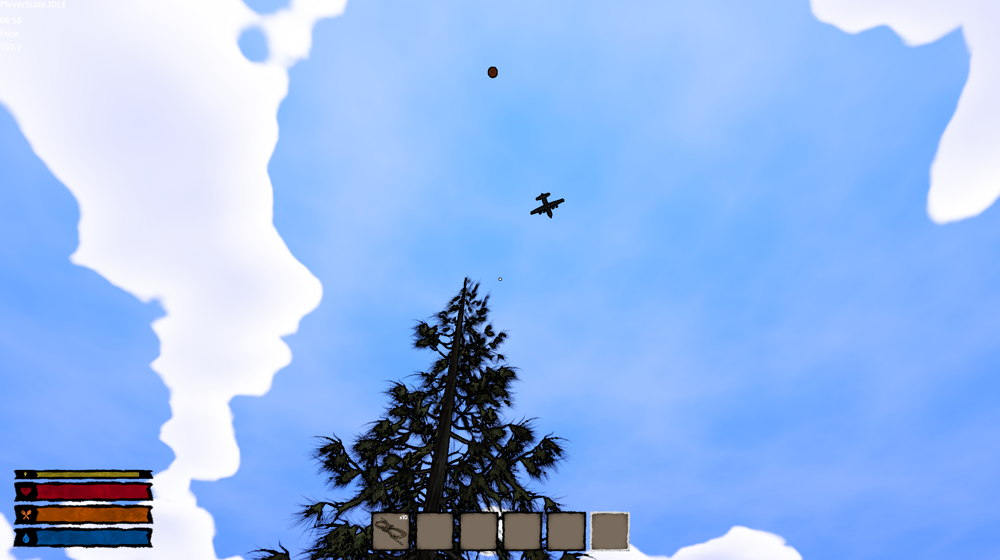
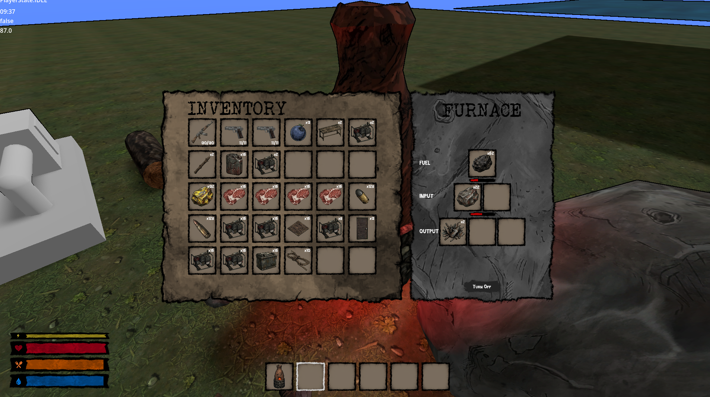

12/10/2026
Nawia DevLog - 01

Hey everyone!
I'm an indie game developer from Poland, and I'd like to share some screenshots of the game I'm currently working on! It's a post-apocalyptic survival game inspired by games like The Walking Dead. My goal is to create a world where survival is about more than just staying alive. You'll be able to build and expand your own settlement, gather resources, conquer enemy outposts, and recruit survivors to join your camp. I want players to gradually turn a small group of survivors into a thriving community in a dangerous world. I'm still actively developing the game, and these screenshots show some of the mechanics I've been working on so far. I'd love to hear your thoughts and feedback! What features would you like to see in a survival game like this?

